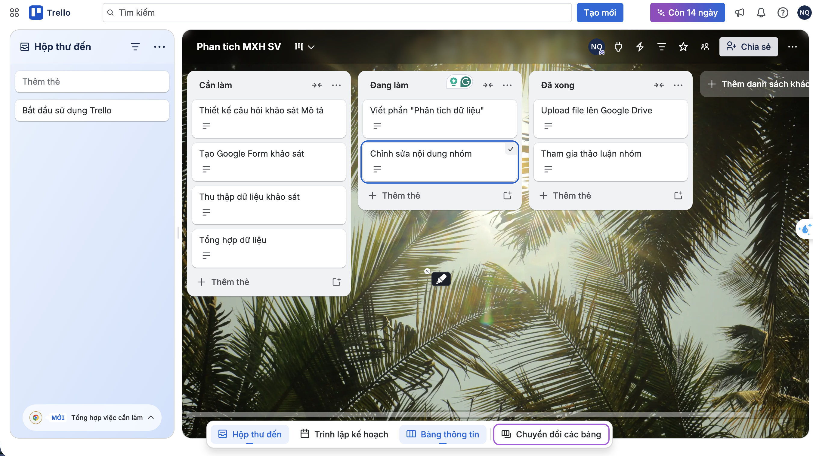
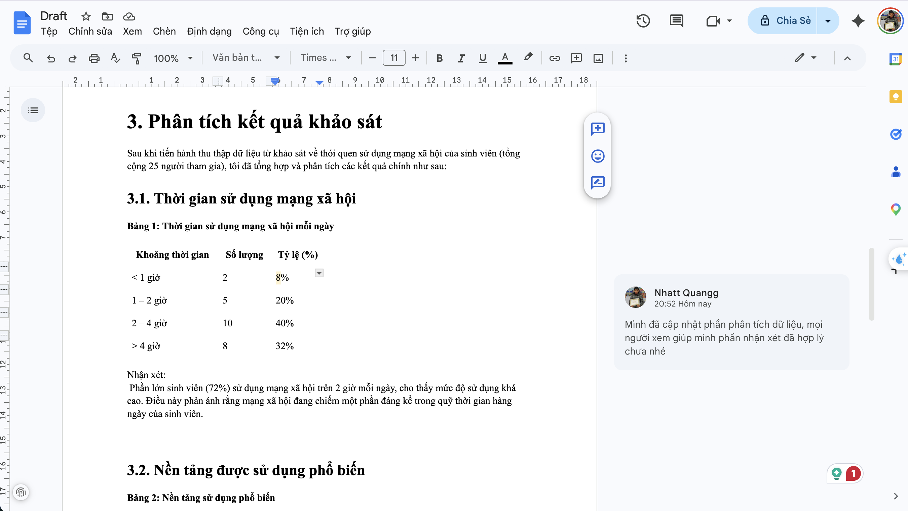
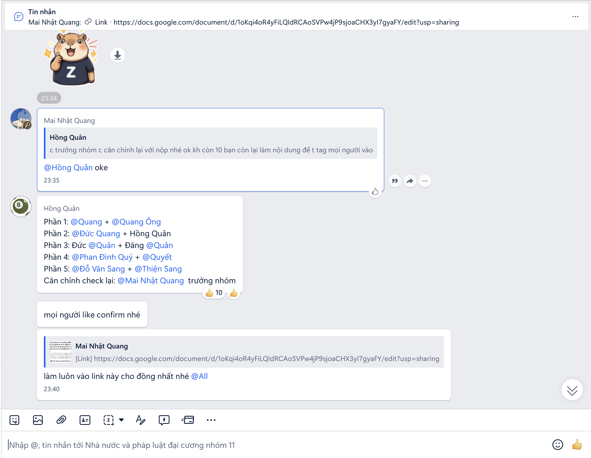
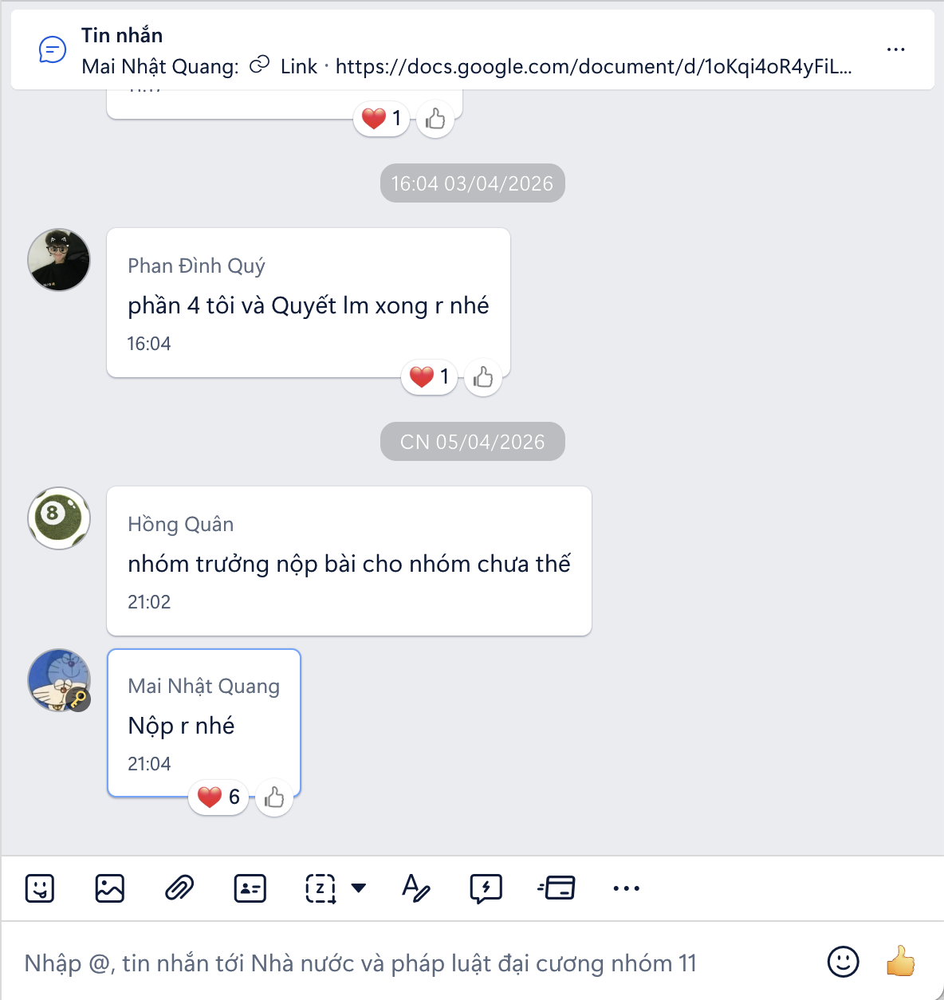
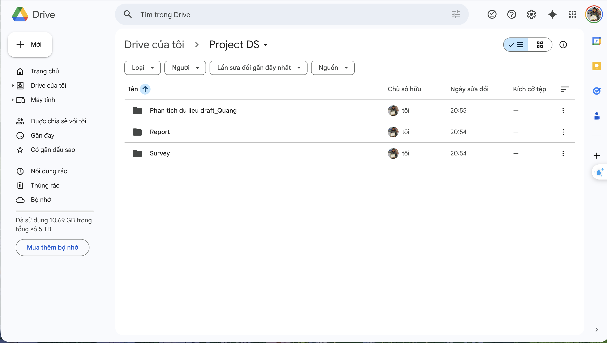

Bài 4: Giao tiếp và hợp tác trong môi trường số
BÁO CÁO CÁ NHÂN
Ứng dụng công cụ hợp tác trực tuyến trong dự án nhóm
1. Giới thiệu chung
Trong bối cảnh học tập hiện nay, việc sử dụng các công cụ hợp tác trực tuyến đóng vai trò rất quan trọng trong quá trình làm việc nhóm. Trong bài tập này, tôi đã tham gia vào một dự án nhóm nhỏ với mục tiêu xây dựng một sản phẩm học thuật (ví dụ: bài thuyết trình / báo cáo).
Trong suốt 1 tuần thực hiện dự án, tôi đảm nhận vai trò là thành viên phụ trách nội dung và quản lý một phần tiến độ công việc cá nhân. Mục tiêu của tôi là hoàn thành tốt nhiệm vụ được giao, đồng thời sử dụng hiệu quả các công cụ số để nâng cao năng suất làm việc và khả năng phối hợp với các thành viên khác.
2. Các công cụ đã sử dụng
Trong quá trình thực hiện dự án, tôi đã sử dụng 4 công cụ chính thuộc các nhóm khác nhau:
Quản lý dự án: Trello
Soạn thảo tài liệu: Google Docs
Lưu trữ và chia sẻ: Google Drive
Giao tiếp nhóm: Zalo
Việc kết hợp các công cụ này giúp tôi có thể quản lý công việc một cách rõ ràng, làm việc đồng thời với các thành viên khác và lưu trữ dữ liệu một cách khoa học.
3. Quá trình thực hiện nhiệm vụ cá nhân
3.1 Quản lý nhiệm vụ cá nhân
Tôi sử dụng Trello để theo dõi tiến độ công việc của bản thân. Tôi đã tạo các danh sách gồm: “To do”, “Doing” và “Done”.
Các nhiệm vụ được giao cho tôi bao gồm:
Viết nội dung một phần của báo cáo nhóm
Tổng hợp tài liệu tham khảo
Kiểm tra và chỉnh sửa nội dung cuối
Ban đầu, tôi đưa tất cả nhiệm vụ vào mục “To do”. Khi bắt đầu thực hiện, tôi chuyển sang “Doing”, và sau khi hoàn thành sẽ chuyển sang “Done”.
Việc này giúp tôi:
Nhìn rõ tiến độ công việc
Tránh quên nhiệm vụ
Chủ động kiểm soát deadline

3.2 Đóng góp nội dung trên tài liệu nhóm
Tôi sử dụng Google Docs để làm việc trực tiếp trên tài liệu chung của nhóm.
Cụ thể, tôi đã:
Viết nội dung cho một mục chính trong bài báo cáo
Chỉnh sửa lỗi chính tả và cách diễn đạt
Thêm comment góp ý cho các phần của thành viên khác
Một điểm quan trọng là Google Docs lưu lại toàn bộ lịch sử chỉnh sửa, vì vậy mọi đóng góp của tôi đều được ghi nhận rõ ràng. Điều này giúp đảm bảo tính minh bạch trong làm việc nhóm.

3.3 Tương tác và giao tiếp với nhóm
Nhóm tôi sử dụng Zalo để trao đổi công việc. Trong quá trình làm việc, tôi đã chủ động:
Tham gia thảo luận về nội dung bài
Hỏi ý kiến khi gặp khó khăn
Nhắc nhở deadline chung
Ví dụ, khi một thành viên chưa hoàn thành phần việc đúng hạn, tôi đã chủ động nhắn tin để trao đổi và hỗ trợ.
Việc giao tiếp thường xuyên giúp:
Tránh hiểu sai yêu cầu
Tăng sự phối hợp giữa các thành viên
Giải quyết vấn đề nhanh hơn


3.4 Tổ chức và lưu trữ tài liệu cá nhân
Tôi sử dụng Google Drive để lưu trữ các file mà mình phụ trách.
Cách tổ chức của tôi:
Tạo thư mục riêng theo tên dự án
Đặt tên file rõ ràng (ví dụ: “Noi_dung_phan_1.docx”)
Phân loại file theo từng nhiệm vụ
Nhờ đó:
Dễ dàng tìm lại tài liệu
Tránh nhầm lẫn giữa các phiên bản
Hỗ trợ chia sẻ nhanh với nhóm

4. Đánh giá hiệu quả của các công cụ
Trello
Ưu điểm: Giao diện trực quan, dễ sử dụng
Nhược điểm: Không phù hợp cho nội dung chi tiết
Google Docs
Ưu điểm: Chỉnh sửa thời gian thực, lưu lịch sử rõ ràng
Nhược điểm: Cần kết nối internet ổn định
Google Drive
Ưu điểm: Lưu trữ tiện lợi, dễ chia sẻ
Nhược điểm: Dung lượng miễn phí có giới hạn
Zalo
Ưu điểm: Giao tiếp nhanh, tiện trao đổi
Nhược điểm: bị hạn chế dung lượng file gửi vào
Nhìn chung, việc kết hợp các công cụ này giúp tăng hiệu quả làm việc cá nhân và cải thiện khả năng phối hợp nhóm.
5. Khó khăn và cách giải quyết
Trong quá trình thực hiện dự án, tôi gặp một số khó khăn như:
Khó khăn
Một số thành viên phản hồi chậm
Công việc bị chồng chéo
Khó quản lý thời gian cá nhân
Cách giải quyết
Chủ động nhắn tin trao đổi trên Zalo
Sử dụng Trello để phân chia rõ nhiệm vụ
Lập kế hoạch làm việc cá nhân theo ngày
Nhờ đó, tôi có thể hoàn thành công việc đúng hạn và duy trì sự phối hợp với nhóm.
6. Kết luận
Qua bài tập này, tôi đã rút ra nhiều kinh nghiệm quan trọng trong việc làm việc nhóm và sử dụng công cụ số.
Cụ thể, tôi đã:
Biết cách quản lý công việc cá nhân hiệu quả
Nâng cao kỹ năng giao tiếp trong môi trường trực tuyến
Làm quen với các công cụ hỗ trợ học tập và làm việc
Trong tương lai, tôi sẽ tiếp tục cải thiện kỹ năng sử dụng các công cụ này để nâng cao hiệu quả làm việc và chuẩn bị tốt hơn cho các dự án lớn hơn.